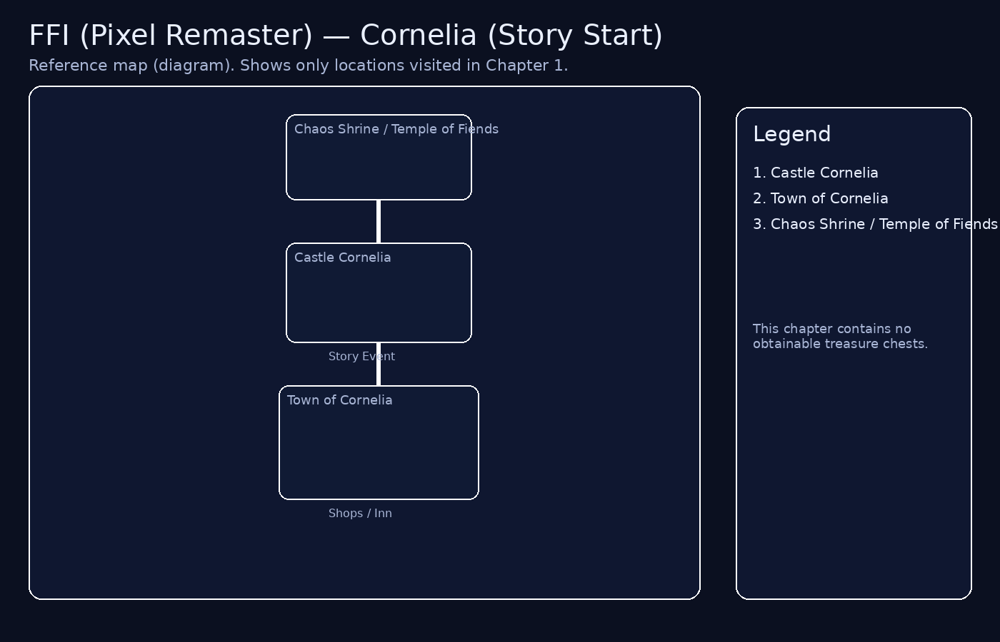

Final Fantasy I (Pixel Remaster) — Chapter 1: Cornelia (Story Start)
Map
(upload: assets/ffi/maps/cornelia-start.png)

If the image is missing, confirm the file path and capitalization in your repo.
Step-by-step
1. Enter Castle Cornelia.
2. Go upstairs and speak to the guard to be brought to the King.
3. Speak to the King to receive the objective: rescue Princess Sarah at the Chaos Shrine / Temple of Fiends.
4. Exit Castle Cornelia to the world map.
5. Walk north to the Chaos Shrine / Temple of Fiends entrance.
 Treasure / Extras checklist (Chapter 1)
Treasure / Extras checklist (Chapter 1)